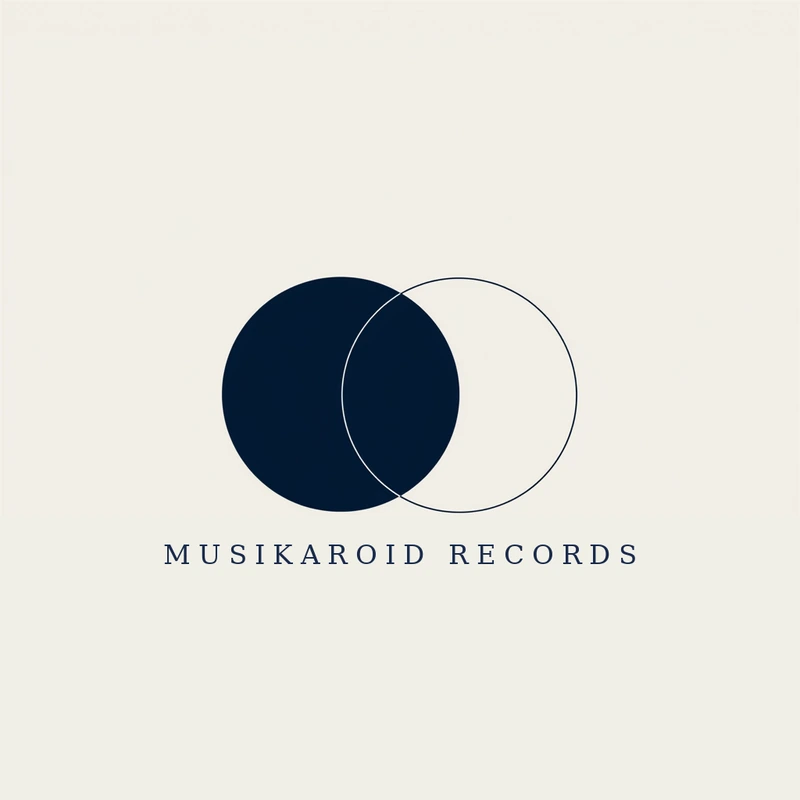

MUSIKAROID RECORDS
ムジカロイドMusikaroid
ムジカロイドとは、作詞・作曲・編曲・マスタリング・映像編集を人間が行い、音響実装のみをAIに委ねる制作方式、およびその方式を開示して活動するアーティストの呼称です。 Musikaroid is a method of making music in which the words, composition, arrangement, mastering, and film are the work of a human — and only the audio realization is entrusted to AI. It is also the name for artists who work openly under this method.
LISTEN
Musikaroid Records 所属アーティストの楽曲です。 Music by the artists of Musikaroid Records.
WHY WE DISCLOSE
隠す理由がないからです。声が人間かどうかは、感動の条件ではないと考えています。方式を開示することは、聴く人への誠実さであり、作り手の署名でもあります。 Because there is nothing to hide. We believe that whether a voice is human is not a condition for being moved. Disclosing the method is honesty toward the listener — and the maker's signature.
CREDITS
ムジカロイドは、すべての作品に定型のクレジットを掲示します。人間の担当とAIの担当を、同じ書式で、同じ場所に。 A Musikaroid publishes a fixed credit line on every work — the human's part and the AI's part, in the same format, in the same place.
Music & Lyrics: Human
MIDI Arrangement & Mastering: Human
Audio Realization: AI
Visual Generation: AI
Video Editing: Human
FAQ
ムジカロイドは「AI歌手」ですか？Is a Musikaroid an "AI singer"?
いいえ。制作の主体は人間です。音響実装のみにAIを用います。No. The maker is human. AI is used only for the audio realization.
なぜ名前をつけたのですか？Why give the method a name?
名前は約束だからです。方式に名前をつけることで、開示の範囲と責任が定まります。Because a name is a promise. Naming the method fixes the scope of disclosure — and the responsibility.
誰でも名乗れますか？Can anyone call themselves a Musikaroid?
制作の主体が人間であり、AIの使用範囲を開示しているなら。If the maker is human, and the use of AI is disclosed.
MUSIKAROID RECORDS

制作方式「ムジカロイド」のレーベル。
音源はレーベル直営の直販で購入できます（WAV / AIFF / FLAC / MP3）。
The label of the Musikaroid method. Master audio can be purchased directly from the label store (WAV / AIFF / FLAC / MP3).
カタログ：MSKR-0001〜 Catalog: MSKR-0001–
作家性は人間が担い、音響実装の一部をAIに委ね、その工程を開示する作り手の受け皿です。所属に費用・義務・独占はありません。 A home for makers who keep the authorship human, entrust part of the audio realization to AI, and disclose the process. No fees, no obligations, no exclusivity.
ARTISTS
CATALOG
NEWS
JOIN
ムジカロイドとして活動を始めたい方は、こちらまでご連絡ください。 If you'd like to begin as a Musikaroid, please get in touch.
費用・義務・独占はありません。離脱はいつでも。 No fees, no obligations, no exclusivity. Leave anytime.